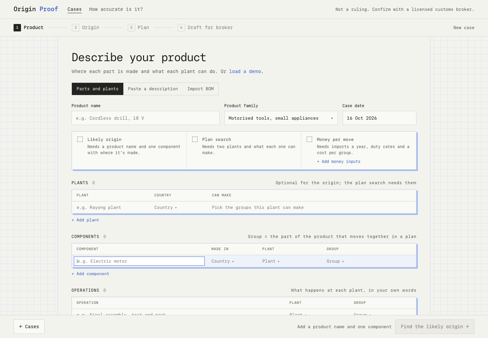
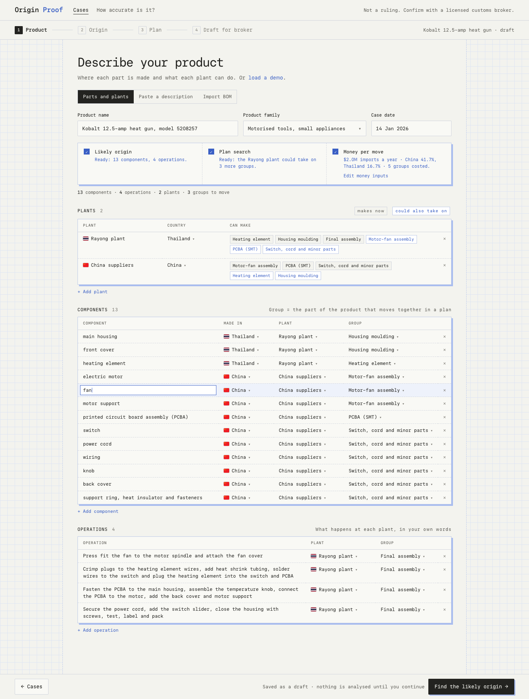
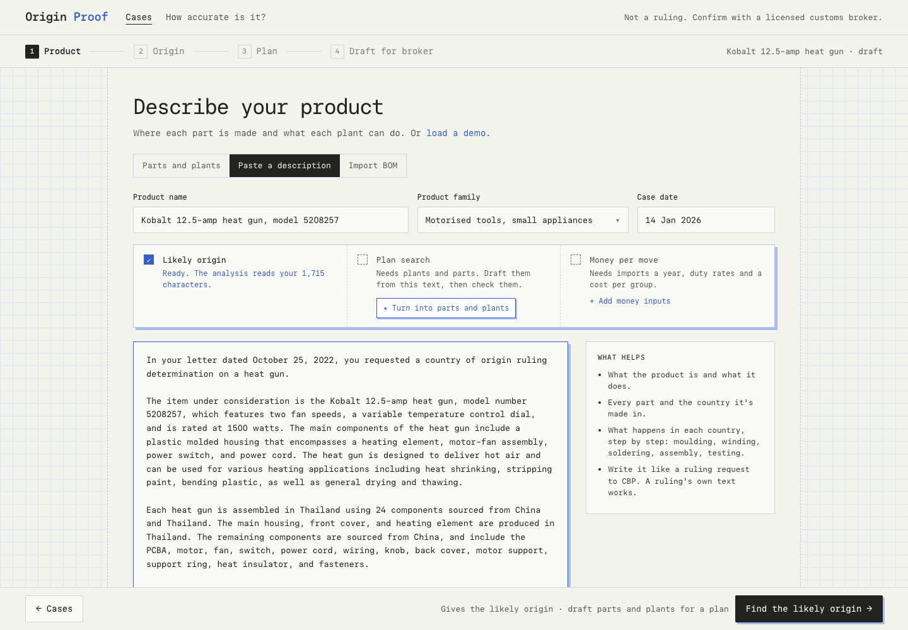
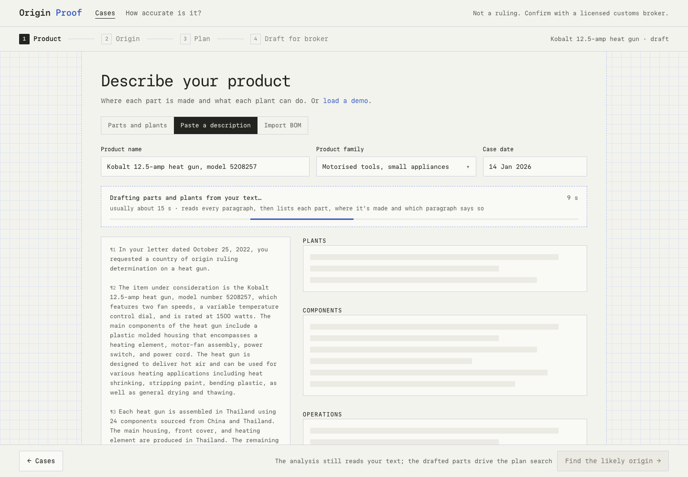
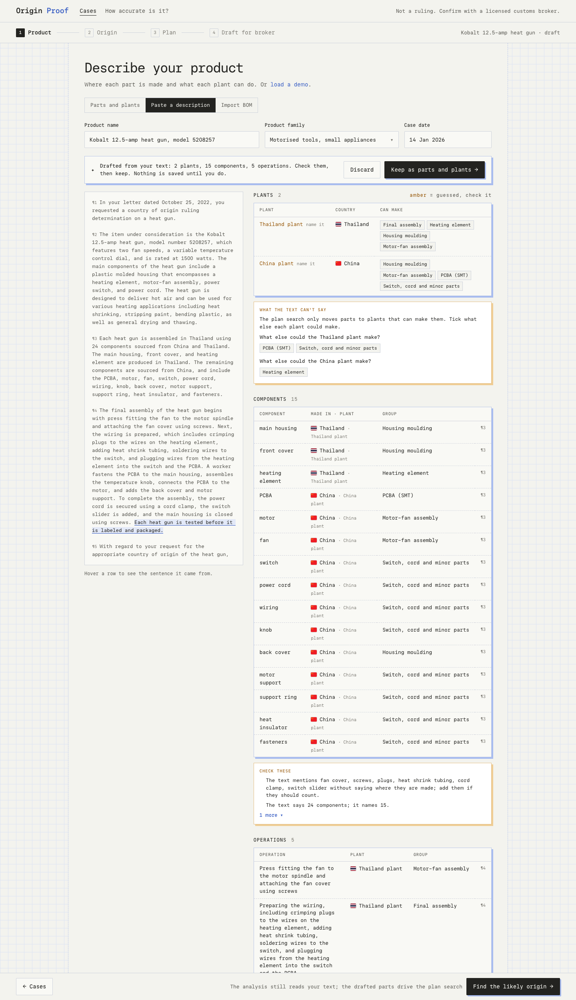
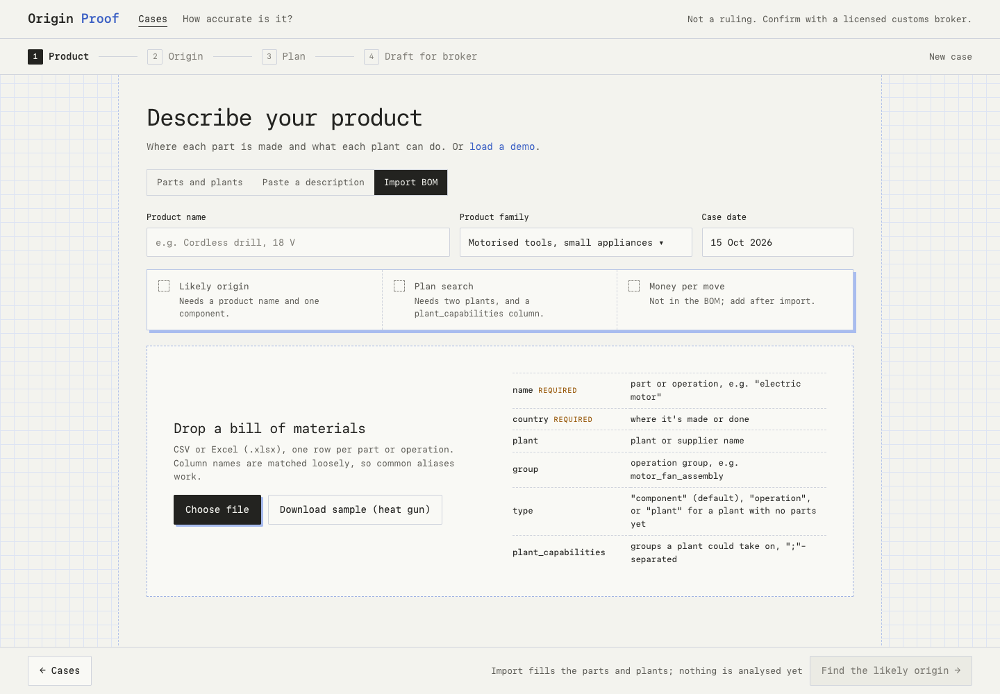
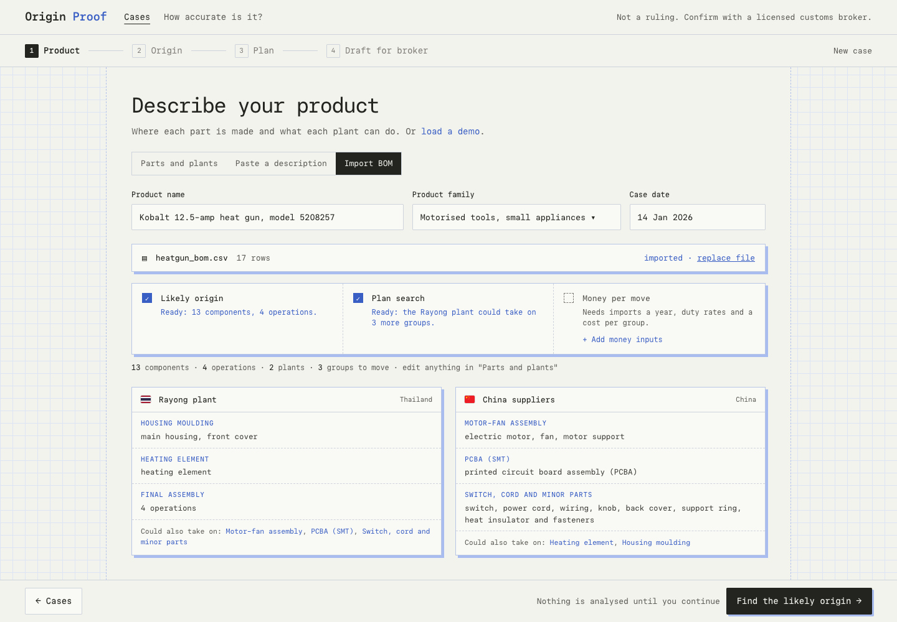
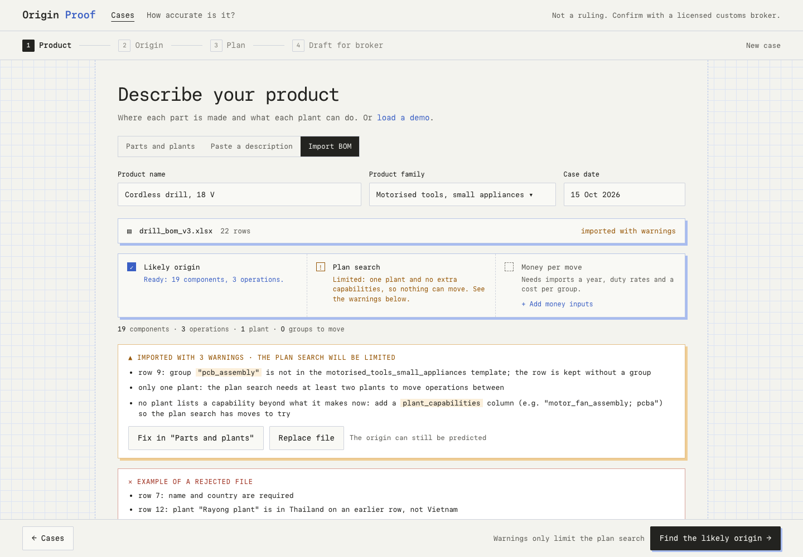
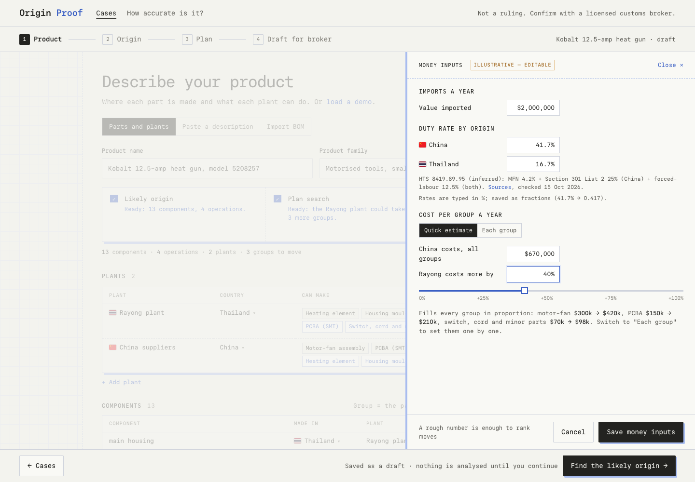
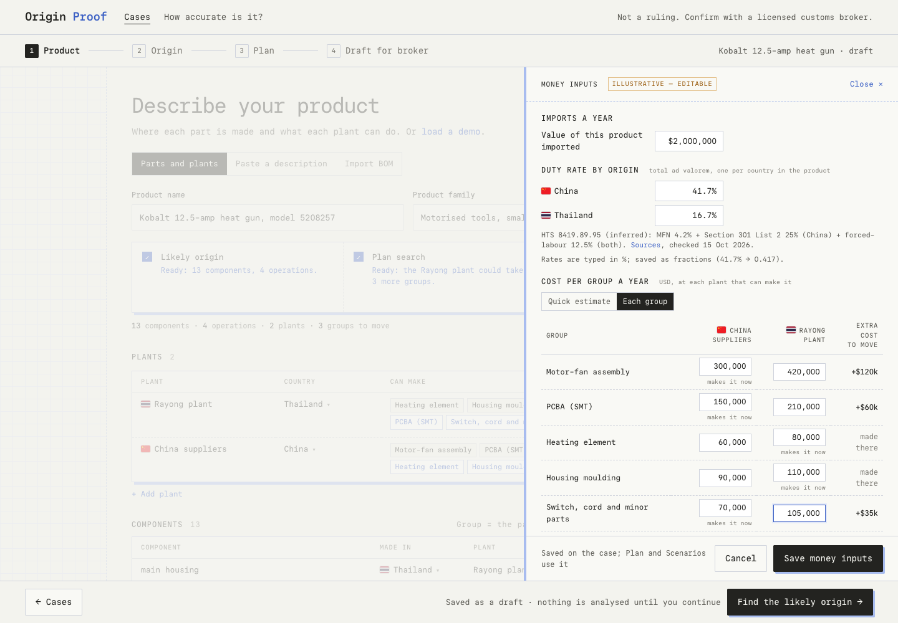

Three tabs, one strip. Every tab shows what the product data unlocks: likely origin, plan search, money per move. Each missing tier says what it needs and links to the fix. Paste can draft parts and plants from the text (POST /v1/products/extract, backend 10618bc, D42). Concepts: c-step1.html. Data: the heat-gun case and its recorded facts text.









